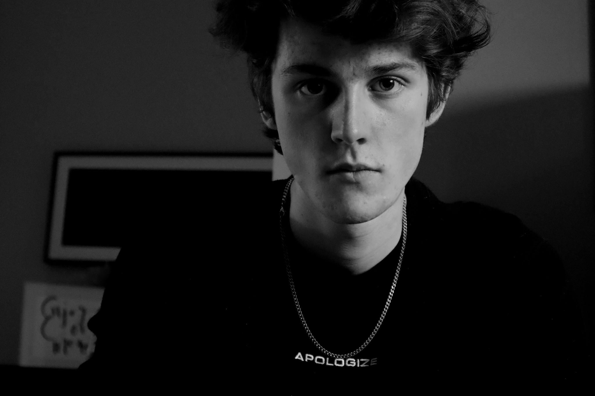
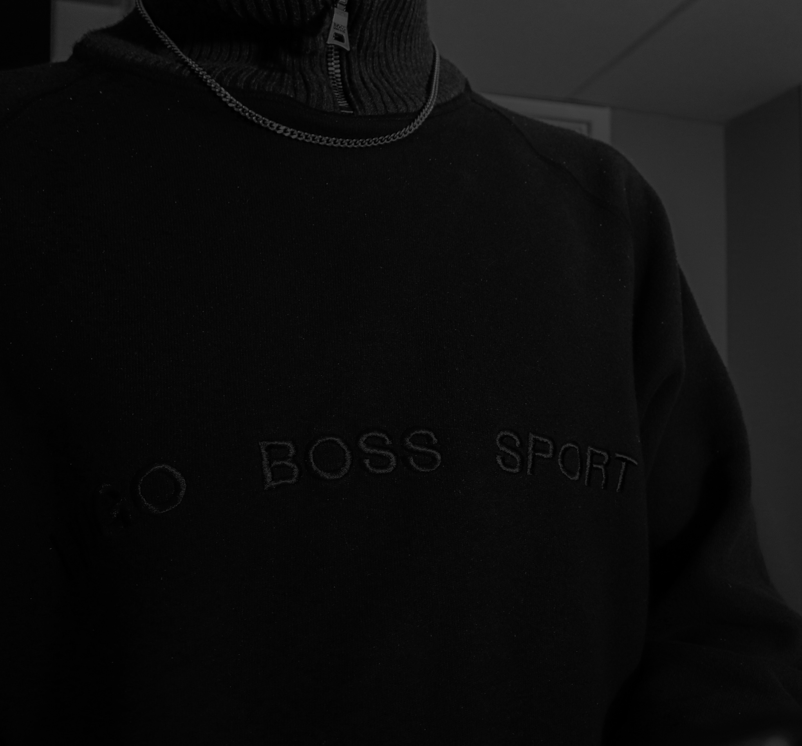

<div class="about">

			  <h2>&nbsp;</h2>
				
				
				
				<h1 class="aboutText">A B O U T</h1>
			  <p>&nbsp;&nbsp; &nbsp;&nbsp; &nbsp;&nbsp; &nbsp; &nbsp;I'm a developer, artist, and photographer based out of central Alberta. I like to create things any way I can, finding different ways to use the artistic mediums at my disposal. My goal is to not only represent my own art on this website but also represent some of the other aspiring artists and content creators I know. I want to create a meaningful way for talented people to get their content out to the world.&nbsp;&nbsp;</p>

</div>
<!---->
.about{
	color: white;
	float: left;
	font: bold 25px/1.4 'Open Sans', arial, sans-serif;
	position: relative;
	align-content: center;
	left: 35%;
	top: 300px;
/*    margin-right: -50%;*/
    transform: translate(-50%, -50%);
}
.about p{
	position: absolute;
	margin-left: 50%;
	margin-top: 90%;
	font: bold 15px/1.4 'Open Sans', arial, sans-serif;
	width: 500px;
	background: transparent;
	line-height: 30px;
	
}
.about h2{
	margin-left: 300px;
	margin-top: 25px;
	position: absolute;
}
.bigthings{
	width: 400px;
	padding-top: 100px;
	position: absolute;
}
.rose{
	width: 150px;
	top: 300px;
	left: 300px;
	padding-right: 10px;
	position: relative;
}
.aboutText{
	position: absolute;
	left: 125px;
	margin-bottom: 500px;
}
.aboutImage {
	object-fit:cover;
/*	object-position: 100%, 100%;*/
	object-position: center, 10%;
	
	width: 200px;
	height: 200px;
	border-radius: 350px;
	display: inline;
	position: relative;
	left: 200px;
	z-index: 1;
}
.footer{
  position: relative;
  display: block;
  bottom: 0;
/*  left: -13%;*/
/*  margin-top: 1000%;*/
/*  width: 100%;*/
  background-color:#F40000;
  color: white;
  text-align: center;
  align-content: center;
  height: 70px;
  margin: 0px auto;

}

.footer img{
/*	padding: 5px;*/
/*	align-content: center;*/
	position: relative;
	width: 58px;
}
.footer img:hover{
	transform: scale(1.25);
	margin: 0px auto;
}
.footer div{
	margin-left: 0px auto;
    display: inline-block;
}
.instagramLogo{
	position: relative;
/*	right: .5%;*/
	display: inline-block;
}
.twitchLogo{
	position: relative;
/*	right: .5%;*/
	display: inline-block;
}
.twitterLogo{
	position: relative;
/*	right: .5%;*/
	display: inline-block;
}
.linkedInLogo{
	position: relative;
/*	right: .5%;*/
	display: inline-block;
}